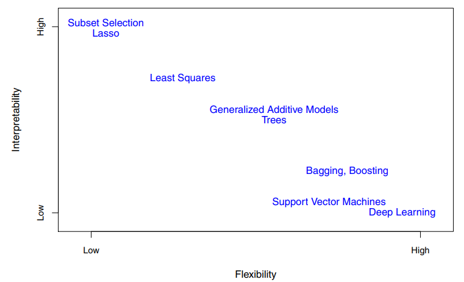
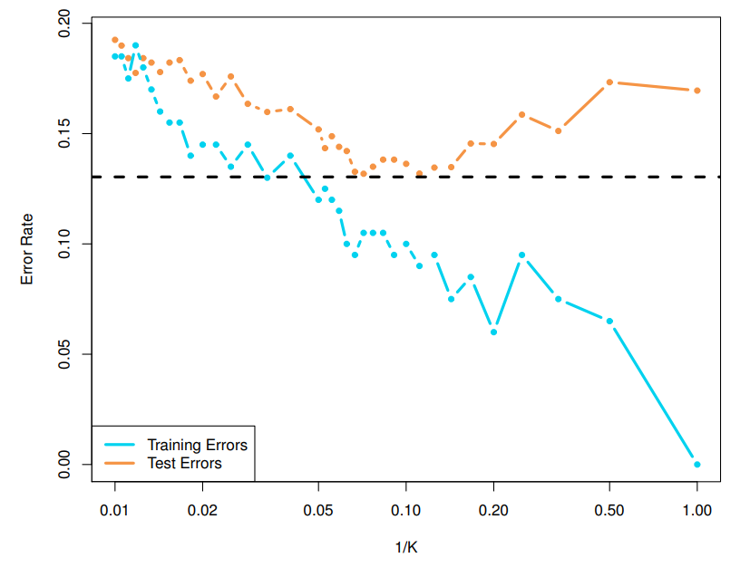

The input variables are typically denoted using the symbol \(X\), with a subscript to distinguish them. The inputs go by different names, such as predictors, independent variables, features, or sometimes just variables. The output variable is often called the response or dependent variable, and is typically denoted using the symbol \(Y\).
More generally, suppose that we observe a quantitative response \(Y\) and \(p\) different predictors, \(X_1\), \(X_2\), . . . , \(X_p\). We assume that there is some relationship between \(Y\) and \(X = (X_1, X_2, . . . , X_p)\), which can be written in the very general form
Here \(f\) is some fixed but unknown function of \(X_1, . . . , X_p\), and \(\epsilon\) is a random error term, which is independent of \(X\) and has mean zero. In this formulation f represents the systematic information that \(X\) provides about \(Y\).
In essence, statistical learning refers to a set of approaches for estimating \(f\). In this chapter we outline some of the key theoretical concepts that arise in estimating \(f\), as well as tools for evaluating the estimates obtained.
There are two main reasons that we may wish to estimate \(f\): prediction and inference.
In many situations, a set of inputs \(X\) are readily available, but the output \(Y\) cannot be easily obtained.
The accuracy of \(\hat{Y}\) as a prediction for \(Y\) depends on two quantities, which we will call the reducible error and the irreducible error.
This is known as the irreducible error, because no matter how well we estimate \(f\), we cannot reduce the error introduced by \(\epsilon\). Why is the irreducible error larger than zero? The quantity \(\epsilon\) may contain unmeasured variables that are useful in predicting \(Y\) : since we don’t measure them, \(f\) cannot use them for its prediction. The quantity \(\epsilon\) may also contain unmeasurable variation.
The focus is on techniques for estimating \(f\) with the aim of minimizing the reducible error. It is important to keep in mind that the irreducible error will always provide an upper bound on the accuracy of our prediction for \(Y\) . This bound is almost always unknown in practice.
We are often interested in understanding the association between Y and X1, . . . , Xp. In this situation we wish to estimate f, but our goal is not necessarily to make predictions for Y . Now \(\hat{f}\) cannot be treated as a black box, because we need to know its exact form. In this setting, one may be interested in answering the following questions:
Which predictors are associated with the response?
What is the relationship between the response and each predictor?
Can the relationship between \(Y\) and each predictor be adequately summarized using a linear equation, or is the relationship more complicated?
Finally, some modeling could be conducted both for prediction and inference. Depending on whether our ultimate goal is prediction, inference, or a combination of the two, different methods for estimating \(f\) may be appropriate. For example, linear models allow for relatively simple and interpretable inference, but may not yield as accurate predictions as some other approaches. In contrast, some of the highly non-linear approaches that we discuss in the later chapters of this book can potentially provide quite accurate predictions for \(Y\) , but this comes at the expense of a less interpretable model for which inference is more challenging.
We explore many linear and non-linear approaches for estimating f. However, these methods generally share certain characteristics. We provide an overview of these shared characteristics in this section. We will always assume that we have observed a set of \(n\) different data points. These observations are called the training data because we will use these training observations to train, or teach, our method how to estimate \(f\). Our goal is to apply a statistical learning method to the training data in order to estimate the unknown function \(f\). Broadly speaking, most statistical learning methods for this task can be characterized as either parametric or non-parametric.
Parametric methods involve a two-step model-based approach.
First, we make an assumption about the functional form, or shape, of \(f\). [预先假设函数的形式恐怕不太好吧，我还是更喜欢 non-linear model]
After a model has been selected, we need a procedure that uses the training data to fit or train the model.
The most common approach to fitting the model is referred to as (ordinary) least squares. However, least squares is one of many possible ways to fit the linear model. In later chapter, we will discuss other approaches for estimating the parameters.
The model-based approach just described is referred to as parametric; it reduces the problem of estimating \(f\) down to one of estimating a set of parameters. Assuming a parametric form for \(f\) simplifies the problem of estimating \(f\) because it is generally much easier to estimate a set of parameters, such as \(β_0, β_1, . . . , β_p\) in the linear model, than it is to fit an entirely arbitrary function \(f\). The potential disadvantage of a parametric approach is that the model we choose will usually not match the true unknown form of \(f\). If the chosen model is too far from the true \(f\), then our estimate will be poor. We can try to address this problem by choosing flexible models that can fit many different possible functional forms for \(f\). But in general, fitting a more flexible model requires estimating a greater number of parameters. These more complex models can lead to a phenomenon known as overfitting the data, which essentially means they follow the errors, or noise, too closely.
Non-parametric methods do not make explicit assumptions about the functional form of \(f\). Instead they seek an estimate of \(f\) that gets as close to the data points as possible without being too rough or wiggly. Such approaches can have a major advantage over parametric approaches: by avoiding the assumption of a particular functional form for \(f\), they have the potential to accurately fit a wider range of possible shapes for \(f\). Any parametric approach brings with it the possibility that the functional form used to estimate \(f\) is very different from the true \(f\), in which case the resulting model will not fit the data well. In contrast, non-parametric approaches completely avoid this danger, since essentially no assumption about the form of \(f\) is made. But non-parametric approaches do suffer from a major disadvantage: since they do not reduce the problem of estimating \(f\) to a small number of parameters, a very large number of observations (far more than is typically needed for a parametric approach) is required in order to obtain an accurate estimate for \(f\). Overfitting: It is an undesirable situation because the fit obtained will not yield accurate estimates of the response on new observations that were not part of the original training data set.
Interpretability
Of the many methods that we examine, some are less flexible, or more restrictive, in the sense that they can produce just a relatively small range of shapes to estimate \(f\).

One might reasonably ask the following question: why would we ever choose to use a more restrictive method instead of a very flexible approach? There are several reasons that we might prefer a more restrictive model. If we are mainly interested in inference, then restrictive models are much more interpretable.
In contrast, very flexible approaches can lead to such complicated estimates of f that it is difficult to understand how any individual predictor is associated with the response.
见 The Halo Effect，所以我更加偏爱 flexible approaches.
We have established that when inference is the goal, there are clear advantages to using simple and relatively inflexible statistical learning methods. In some settings, however, we are only interested in prediction, and the interpretability of the predictive model is simply not of interest. Surprisingly, this is not always the case! We will often obtain more accurate predictions using a less flexible method. This phenomenon, which may seem counterintuitive at first glance, has to do with the potential for overfitting in highly flexible methods.
Most statistical learning problems fall into one of two categories: supervised supervised or unsupervised.
For supervised learning, We wish to fit a model that relates the response to the predictors, with the aim of accurately predicting the response for future observations (prediction) or better understanding the relationship between the response and the predictors (inference). By contrast, for unsupervised learning, we can seek to understand the relationships between the variables or between the observations. However, sometimes the question of whether an analysis should be considered supervised or unsupervised is less clear-cut. We refer to this setting as a semi-supervised learning problem.
Variables can be characterized as either quantitative or qualitative. Quantitative variables take on numerical values. In contrast, qualitative variables take on values in one of K different classes, or categories. We tend to refer to problems with a quantitative response as regression problems, while those involving a qualitative response are often referred to as classification problems.
We tend to select statistical learning methods on the basis of whether the response is quantitative or qualitative。 However, whether the predictors are qualitative or quantitative is generally considered less important. Most of the statistical learning methods discussed can be applied regardless of the predictor variable type, provided that any qualitative predictors are properly coded before the analysis is performed.
There is no free lunch in statistics: no one method dominates all others over all possible data sets. On a particular data set, one specific method may work best, but some other method may work better on a similar but different data set. Hence it is an important task to decide for any given set of data which method produces the best results. Selecting the best approach can be one of the most challenging parts of performing statistical learning in practice.
其实对于人士导师、专业选择、事业方向的建议也同理。详见不能乐观过度，无须悲观绝望
In this section, we discuss some of the most important concepts that arise in selecting a statistical learning procedure for a specific data set.
In order to evaluate the performance of a statistical learning method on a given data set, we need some way to measure how well its predictions actually match the observed data. That is, we need to quantify the extent to which the predicted response value for a given observation is close to the true response value for that observation. In the regression setting, the most commonly-used measure is the mean squared error(\(MSE\))
The MSE will be small if the predicted responses are very close to the true responses, and will be large if for some of the observations, the predicted and true responses differ substantially.
The MSE discussed is computed using the training data that was used to fit the model, and so should more accurately be referred to as the training MSE. But in general, we do not really care how well the method works training on the training data. Rather, we are interested in the accuracy of the predictions that we obtain when we apply our method to previously unseen test data.
历史经验不一定能够预测未来
We want to choose the method that gives the lowest test MSE, as opposed to the lowest training MSE. In other words, if we had a large number of test observations, we could compute
We’d like to select the model for which this quantity is as small as possible.
How can we go about trying to select a method that minimizes the test MSE? In some settings, we may have a test data set available—that is, we may have access to a set of observations that were not used to train the statistical learning method. We can then simply evaluate on the test observations, and select the learning method for which the test MSE is smallest. But what if no test observations are available? In that case, one might imagine simply selecting a statistical learning method that minimizes the training MSE. This seems like it might be a sensible approach, since the training MSE and the test MSE appear to be closely related. Unfortunately, there is a fundamental problem with this strategy: there is no guarantee that the method with the lowest training MSE will also have the lowest test MSE. Roughly speaking, the problem is that many statistical methods specifically estimate coefficients so as to minimize the training set MSE. For these methods, the training set MSE can be quite small, but the test MSE is often much larger.
Training MSE (grey curve), test MSE (red curve), and minimum possible test MSE over all methods (dashed line)
As the flexibility of the statistical learning method increases, we observe a monotone decrease in the training MSE and a U-shape in the test MSE. This is a fundamental property of statistical learning that holds regardless of the particular data set at hand and regardless of the statistical method being used. As model flexibility increases, training MSE will decrease, but the test MSE may not. When a given method yields a small training MSE but a large test MSE, we are said to be overfitting the data. This happens because our statistical learning procedure is working too hard to find patterns in the training data, and may be picking up some patterns that are just caused by random chance rather than by true properties of the unknown function \(f\). When we overfit the training data, the test MSE will be very large because the supposed patterns that the method found in the training data simply don’t exist in the test data. Note that regardless of whether or not overfitting has occurred, we almost always expect the training MSE to be smaller than the test MSE because most statistical learning methods either directly or indirectly seek to minimize the training MSE. Overfitting refers specifically to the case in which a less flexible model would have yielded a smaller test MSE.
In practice, one can usually compute the training MSE with relative ease, but estimating test MSE is considerably more difficult because usually no test data are available. One important method is cross-validation.
\(f\) is approximately linear
\(f\) is highly non-linear
The U-shape observed in the test MSE curves turns out to be the result of two competing properties of statistical learning methods. It is possible to show that the expected test MSE, for a given value \(x_0\), can always be decomposed into the sum of three fundamental quantities: the variance of \(\hat{f}(x_0)\), the squared bias of \(\hat{f}(x_0)\) and the variance of the error terms \(\epsilon\).
What do we mean by the variance and bias of a statistical learning method? Variance refers to the amount by which \(\hat{f}\) would change if we estimated it using a different training data set. Since the training data are used to fit the statistical learning method, different training data sets will result in a different \(\hat{f}\). But ideally the estimate for \(f\) should not vary too much between training sets. However, if a method has high variance then small changes in the training data can result in large changes in \(\hat{f}\). In general, more flexible statistical methods have higher variance.
On the other hand, bias refers to the error that is introduced by approximating a real-life problem, which may be extremely complicated, by a much simpler model. For example, linear regression assumes that there is a linear relationship. It is unlikely that any real-life problem truly has such a simple linear relationship, and so performing linear regression will undoubtedly result in some bias in the estimate of \(f\). Generally, more flexible methods result in less bias.
As a general rule, as we use more flexible methods, the variance will increase and the bias will decrease. The relative rate of change of these two quantities determines whether the test MSE increases or decreases. We increase the flexibility of a class of methods, the bias tends to initially decrease faster than the variance increases. Consequently, the expected test MSE declines. However, at some point increasing flexibility has little impact on the bias but starts to significantly increase the variance. When this happens the test MSE increases.
bias vs variance
Good test set performance of a statistical learning method requires low variance as well as low squared bias. This is referred to as atrade-off because it is easy to obtain a method with extremely low bias but high variance (for instance, by drawing a curve that passes through every single training observation) or a method with very low variance but high bias (by fitting a horizontal line to the data). The challenge lies in finding a method for which both the variance and the squared bias are low.
In a real-life situation in which \(f\) is unobserved, it is generally not possible to explicitly compute the test MSE, bias, or variance for a statistical learning method. Nevertheless, one should always keep the bias-variance trade-off in mind. In this book we explore methods that are extremely flexible and hence can essentially eliminate bias. However, this does not guarantee that they will outperform a much simpler method such as linear regression.
Thus far, our discussion of model accuracy has been focused on the regression setting. But many of the concepts that we have encountered, such as the bias-variance trade-off, transfer over to the classification setting with only some modifications due to the fact that \(y_i\) is no longer quantitative. Suppose that we seek to estimate \(f\) on the basis of training observations \({(x_1, y_1), . . . , (x_n, y_n)}\), where now \(y_1, . . . , y_n\) are qualitative. The most common approach for quantifying the accuracy of our estimate \(\hat{f}\) is the training error rate, the proportion of mistakes that are made if we apply our estimate fˆ to the training observations:
Here \(\hat{y}_j\) is the predicted class label for the \(i\)th observation using \(\hat{f}\). And \(I(y_j\neq\hat{y}_j)\) is an indicator variable that equals 1 if \(y_j\neq\hat{y}_j\) and zero if \(y_j=\hat{y}_j\). indicator If \(I(y_j\neq\hat{y}_j) = 0\) then the \(i\)th observation was classified correctly by our variable classification method; otherwise it was misclassified.
The equation is referred to as the training error rate because it is computed based on the data that was used to train our classifier. As in the regression setting, we are most interested in the error rates that result from applying our classifier to test observations that were not used in training. The test error rate associated with a set of test observations of the form \((x_0, y_0)\) is given by
A good classifier is one for which the test error is smallest.
It is possible to show that the test error rate given is minimized, on average, by a very simple classifier that assigns each observation to the most likely class, given its predictor values. In other words, we should simply assign a test observation with predictor vector \(x_0\) to the class \(j\) for which:
In theory we would always like to predict qualitative responses using the Bayes classifier. But for real data, we do not know the conditional distribution of \(Y\) given \(X\), and so computing the Bayes classifier is impossible. Therefore, the Bayes classifier serves as an unattainable gold standard against which to compare other methods. Many approaches attempt to estimate the conditional distribution of \(Y\) given \(X\), and then classify a given observation to the class with highest estimated probability. One such method is the K-nearest neighbors (KNN) classifier. Given a positive integer \(K\) and a test observation \(x_0\), the KNN classifier first identifies the \(K\) points in the training data that are closest to \(x_0\), represented by \(N_0\). It then estimates the conditional probability for class \(j\) as the fraction of points in \(N_0\) whose response values equal \(j\):
Despite the fact that it is a very simple approach, KNN can often produce classifiers that are surprisingly close to the optimal Bayes classifier.
The choice of K has a drastic effect on the KNN classifier obtained.
When K = 1, the decision boundary is overly flexible and finds patterns in the data that don’t correspond to the Bayes decision boundary. This corresponds to a classifier that has low bias but very high variance. As K grows, the method becomes less flexible and produces a decision boundary that is close to linear. This corresponds to a low-variance but high-bias classifier.
Just as in the regression setting, there is not a strong relationship between the training error rate and the test error rate. With K = 1, the KNN training error rate is 0, but the test error rate may be quite high. In general, as we use more flexible classification methods, the training error rate will decline but the test error rate may not. As in the regression setting, the training error rate consistently declines as the flexibility increases. However, the test error exhibits a characteristic U-shape, declining at first (with a minimum at approximately K = 10) before increasing again when the method becomes excessively flexible and overfits.

In this section, the authors talk about some core concepts for supervised learning: why do we want to estimate \(f\), how to estimate it(parametric and non-parametric), how to measure the accuracy of our estimate, the difference between supervised learning and unsupervised learning, regression and classification, the trade off between flexibility and interpretablity, variance and bias, and soon. Also, the authors explore some methods on classification setting.